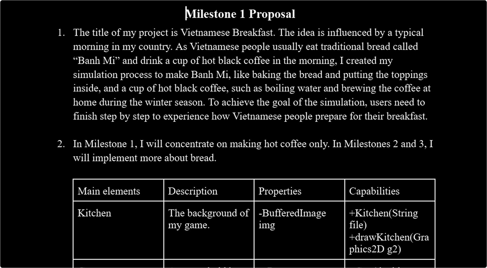
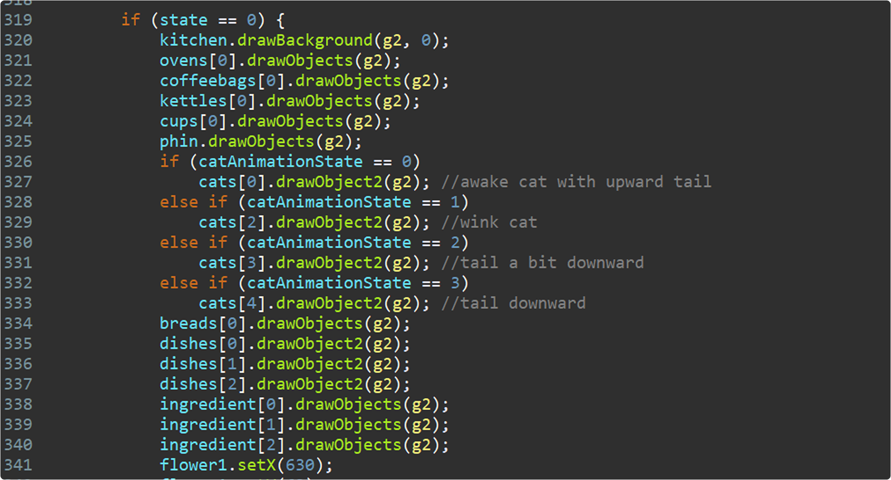

02 Ideation and Branstorming
The concept for this interactive simulation game centers around preparing a traditional and iconic Vietnamese breakfast, featuring “banh mi” and a hot cup of coffee.
As I was born and raised in Vietnam, these dishes have been an essential part of my mornings, making them a meaningful choice for this project.
03 Illustration
The illustration focuses on vibrant, hand-drawn visuals that bring Vietnamese culture to life.
Key elements include detailed portrayals of traditional kitchen tools, and ingredients with a peaceful setting, illustrating the authentic Vietnamese breakfast culture.
The primary combination of yellow, red, and orange represents the warm tone, giving a sense of nostalgia

04 Programming Development
The coding aspect focuses on creating interactive features between the program and users.
Java manages gameplay mechanics, including step-by-step recipes, minor animations, and sound effects to enhance realism.
For example, dragging a cup triggers a placement sound, controlled by a Finite State Machine (FSM) which is a programming model that manages game stages and transitions.
05 Usability Testing and Iterations
This session focuses on improving the game’s usability to ensure smooth interactions.
Addressing bugs in ingredient collisions with household items required excessive testing and fixes.
Iterations refined visuals and added guiding elements, such as a text box to enhance user flow.
Iterations ensure the game accurately represents Vietnamese culture while providing a seamless user experience.